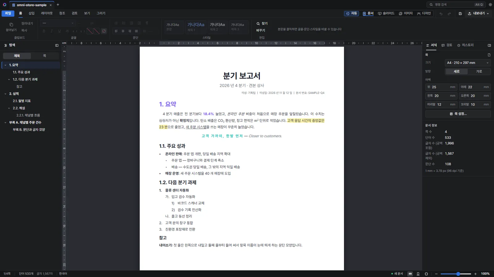
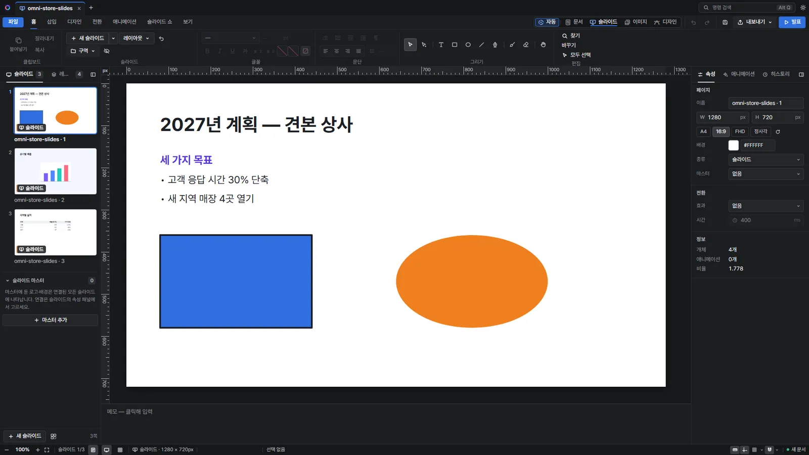
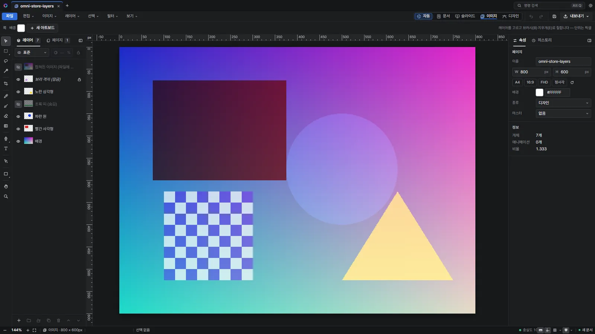
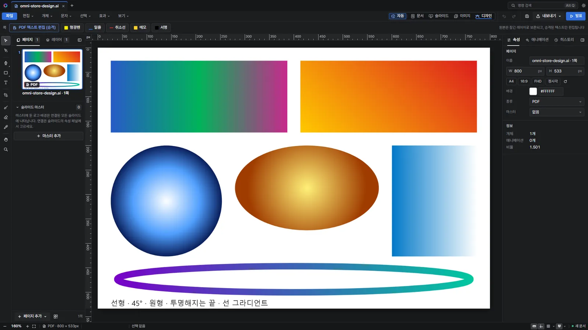
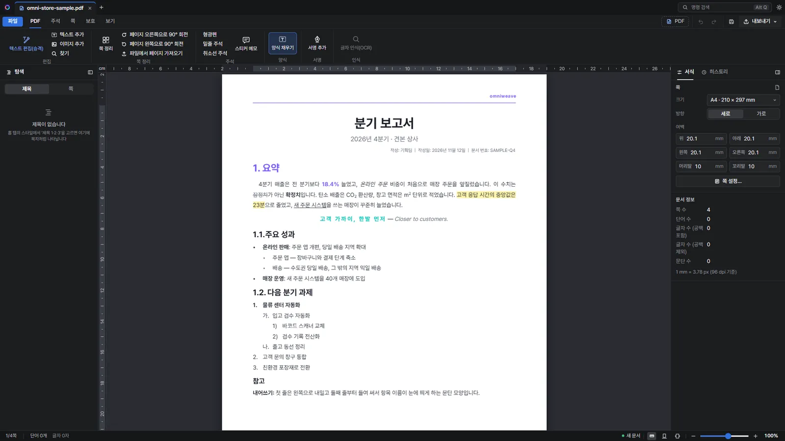
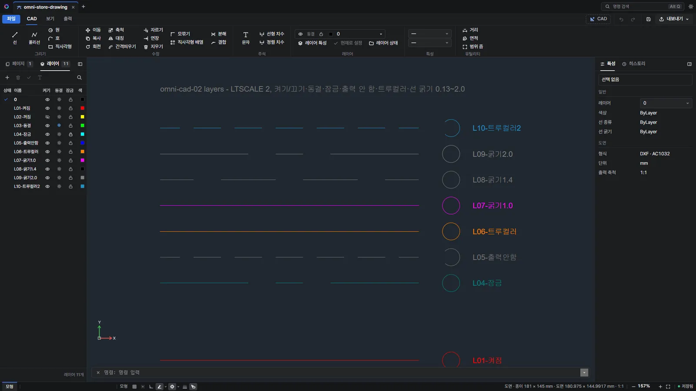

받은 문서는 제각각,작업은 .omw 하나로.
어떤 형식이든 한 캔버스에서 열고 고칩니다. 보낼 때는 원래 형식으로 내보내면 됩니다.
- 열기받은 파일 그대로
- 모으기작업은 .omw 한 파일에
- 내보내기보낼 때는 원래 형식으로
목표.omw를 누구나 읽고 쓰는 공통 작업 파일로
화면 둘러보기
한 앱에서
모드만 바꿉니다.
모두 실제 앱 화면입니다. 탭을 눌러 보세요.

DOCX · HWPX · DOC · HWP
제목 탐색과 쪽 설정까지 갖춘 문서 편집
- 모드 전환
- 제목으로 탐색
- 쪽 크기와 여백

PPTX · PPT
마스터, 전환 효과, 슬라이드 쇼
- 슬라이드 목록
- 전환 효과
- 바로 발표

PSD · PNG · JPG · WebP
PSD 레이어를 그대로 열어 고칩니다
- 레이어
- 혼합 모드
- 그리기 도구

AI · SVG
AI 파일의 도형과 그라디언트를 그대로
- 페이지
- 펜과 도형 도구
- 크기 프리셋

글자를 편집 가능한 개체로 바꿔 고칩니다
- 텍스트 편집
- 쪽 정리
- 주석, 양식, 서명

DWG · DXF
도면을 가져와 레이어와 선을 편집합니다
- 도면 레이어
- 수정 명령
- 명령 입력줄
화면 속 파일은 시험용으로 만든 예시입니다.
.omw 형식
닫아 두지 않은
작업 파일.
어디서나 쓰는 공통 작업 파일이 되려면 누구나 열 수 있어야 합니다. 그래서 처음부터 열어 두었습니다.
- zip 한 개압축 프로그램으로 열어 안을 볼 수 있습니다. 암호를 건 파일만 예외입니다.
- 구조 공개어떤 내용이 어느 파일에 들어가는지 문서로 공개했습니다.
- GPL 오픈소스.omw를 읽고 쓰는 코드를 누구나 보고 고쳐 쓸 수 있습니다.
목표지금 .omw를 여는 프로그램은 Omniweave뿐입니다. 다른 도구도 읽고 쓰는 공통 형식이 되는 것이 목표입니다.
패키지 구조 보기
document.omw ├── mimetype 형식 표시 (첫 항목, 무압축) ├── manifest.json 메타데이터와 페이지 색인 ├── scene_graph.cbor 편집 내용 전체 ├── rasters/<hash>.raw 중복을 뺀 256×256 픽셀 타일 ├── assets/<hash>.<ext> 그림, PDF, 글꼴 원본 ├── slides/slide_deck.json 슬라이드 순서와 전환 (읽기용 사본) ├── vectors/paths.json 벡터 패스 (읽기용 사본) ├── documents/document.xml 문서 문단 (읽기용 사본) └── documents/preview.txt 검색용 일반 텍스트
Omniweave는 scene_graph.cbor와 조각 파일만 읽고, 사본은 다른 도구를 위해 넣습니다. 열 때마다 모든 조각의 해시를 다시 확인해 손상된 조각만 건너뜁니다.
숫자로 보기
직접 잰 값만 적었습니다.
측정 조건과 한계
- 설치 파일: Omniweave_0.2.0_x64-setup.exe 17,464,150바이트(서명 전 빌드). 판마다 달라질 수 있습니다.
- 실무 샘플: 2026-11-22 출시 전 점검. 모두 성공, 부분, 안내(열 수 없는 이유 표시) 중 하나였습니다. 파일 이름과 내용은 공개하지 않습니다.
- 원본 보존: DOCX, HWPX, XLSX, PPTX, PDF는 저장소 견본 전부, PSD는 259/259에서 확인했습니다.
- 인터넷은 새 버전 확인(GitHub Releases)에만 씁니다.
- 암호 문서(PDF AES-256, Office Agile, .omw AES-256-GCM)는 고친 뒤 다시 암호화해 저장합니다.
- 초기 판입니다. 중요한 문서는 원본을 따로 보관해 주세요.
Loom 엔진
바뀐 곳만
다시 그리고 다시 저장.
타일과 개체마다 내용 주소를 매겨, 같은 조각은 한 번만 저장합니다.
구조와 측정 조건
- Thread256px 타일, 개체, 자산마다 64비트 내용 주소. 같은 타일은 파일에 한 번만 들어갑니다.
- Weave Cache화면 타일의 키가 곧 그 영역에 닿는 조각들의 주소 해시. 무효화 코드가 없어 지운 자국이 남는 버그가 구조상 생기지 않습니다.
- Shuttle Journal처음 보는 조각만 IndexedDB에 기록. 자동 저장이 가볍고, 비정상 종료 뒤 복구할 수 있습니다.
- 불변 히스토리실행 취소는 문서 참조를 바꾸는 일이라 픽셀을 복사하지 않습니다.
npm run bench(Vitest bench, Node)로 합성 4K 문서를 잰 값입니다. 타일 참조 205개 중 고유 42개, 원시 51.3 MiB가 .omw 1.43 MiB로 저장되고, 실행 취소와 다시 실행은 0.09–0.18 ms입니다(같은 문서 깊은 복사는 24–28 ms). 저장 후 다시 열었을 때 손상과 누락은 0입니다. 기기: Intel Core Ultra 5 125H, Windows 11, Node v24.13.1. 그리기 시간은 포함하지 않았습니다.
격자를 문질러 보세요. 닿은 타일만 다시 그립니다.
FAQ
자주 묻는 질문
지금 쓰는 프로그램이 필요 없어지나요?
아니요. 여러 형식을 한곳에서 다루는 것이 목표이고, 인쇄 분판이나 고급 필터 같은 전문 기능은 아직 범위 밖입니다.
다른 형식으로 저장하면 내용이 빠지지 않나요?
빠지는 내용이 있으면 저장하기 전에 무엇이 빠지는지 알려 줍니다.
.omw로 저장하면 받는 사람은 어떻게 여나요?
상대에게 Omniweave가 없다면 DOCX, PDF 같은 원래 형식으로 내보내 보내세요. .omw는 zip이라 안에 든 그림과 글 사본은 다른 도구로도 꺼낼 수 있습니다.
어떤 파일이든 제대로 열리나요?
형식마다 지원 수준을 전체, 부분, 안내로 표시합니다. PSD의 일부 효과나 PPTX의 일부 도형은 비슷하게 그리고, HEIC 사진처럼 열 수 없는 파일은 이유를 알려 줍니다. 제대로 열리지 않는 파일은 제보해 주세요.
오픈소스 · GPL-3.0
같이 엮어 주세요.
가장 큰 도움은 제대로 열리지 않는 파일입니다.
- 파일 제보민감한 내용을 지운 견본이면 충분합니다.
- 코드 기여TypeScript, React, Tauri 2. 규칙은 CONTRIBUTING.md에 있습니다.
git clone https://github.com/wind2sp/omniweave.git cd omniweave npm i npm run dev # 브라우저에서 실행 npm test # 단위 테스트 npm run bench # Loom 벤치마크
이름 이야기
왜 ‘오메’일까요?
“오메!”는 전라도에서 놀라거나 감탄할 때 절로 나오는 말입니다. Omniweave의 앞 글자이기도 하고요.
“파일 하나에 다 된다니, 오메!”
- 한국어
- 오메[o.me]
- English
- Oh-meh/oʊ.meɪ/
- 日本語
- オメome
- 中文
- 欧梅Ōuméi